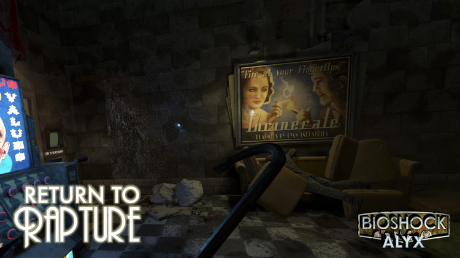

Эта статья, шаблон, галерея или раздел находится в середине расширения или реконструкции.Мы будем рады Вашей помощи в создании или реконструкции. Тем не менее, не делайте серьезных изменений до проведения консультаций с сообществом, поскольку соответствующие редакторы, вероятно, создали руководящие принципы для построения страницы.
Half-Life: Delta — масштабная модификация для первой Half-Life, которая по количеству контента тянет на статус полноценного ответвления. Автор под псевдонимом XF-Alien начал создавать её более пяти лет назад. А недавно он опубликовал новый геймплейный трейлер проекта и заявил, что планирует выпустить его в июне или июле текущего года.
В свежем ролике показано исследование локаций на территории научного комплекса «Чёрная Меза» и сражения с врагами. Главный герой применяет револьвер, дробовик и автоматическую винтовку M-16 для уничтожения противников. Фирменная монтировка, ставшая символом Half-Life, тоже присутствует в модификации — с её помощью протагонист разбивает предметы окружения, в которых спрятаны ресурсы.
Сюжет в Half-Life: Delta рассказывает о Нике Фарелле — техническом инженере из «Штаба дельта», отдела на территории «Чёрной Мезы». В его обязанности входило обслуживание генераторов, но после инцидента, показанного в первой части серии, главному герою пришлось взяться за оружие и попытаться выжить в окружающем хаосе.
Повествование в модификации разбито на четыре главы. Также Half-Life: Delta сможет похвастаться новым оружием, созданными с нуля моделями, оригинальным звуковым сопровождением и так далее.
В мае прошлого года энтузиаст под псевдонимом Konqithekonqueror отвязал Half-Life: Alyx от VR и добавил в игру оружие, а также недостающие анимации из Half-Life 2. Похожим проектом сейчас занимается автор YouTube-канала SoMNst вместе с несколькими товарищами. Правда, они пошли более сложным путём — постарались адаптировать проект под стандартное управление с помощью клавиатуры и мышки при минимальных изменениях геймплея.
В недавнем ролике энтузиасты продемонстрировали прогресс в создании своего творения. Они опубликовали 9-минутный отрезок прохождения Half-Life: Alyx, где главная героиня Аликс сражается с врагами и исследует мир. Энтузиасты поработали над видом от первого лица, приблизив его к тому, что используется в обычных шутерах (не VR); изменили несколько анимаций, например, при перезарядке и использовании лестниц; а также реализовали возможность прыгать и свободно передвигаться с помощью клавиш на клавиатуре.
Свою модификацию авторы называют просто No Vr. Когда именно она выйдет, на текущий момент неизвестно. Напомним: релиз Half-Life: Alyx состоялся 23 марта 2020 года на VR-гарнитурах с поддержкой SteamVR.
Half-Life: Alyx вышла 23 марта 2020 года на устройствах с поддержкой SteamVR и получила множество хвалебных отзывов от прессы и пользователей. Полноценный анонс игры состоялся в ноябре 2019-го, однако Valve очень боялась показывать проект общественности. Об этом в интервью изданию The Gamer рассказал руководитель разработки Half-Life: Alyx Робин Уокер (Robin Walker).
Уокер сообщил: «Я думаю, в течение первых нескольких лет [производства] в компании была группа людей, скептически относившаяся к тому, что мы собираемся создать и выпустить новую Half-Life. Весь существующий [среди аудитории] скептицизм по поводу работы Valve над HL был жив и внутри самой компании, и вы просто смиряетесь с мыслью, что никогда не сделаете это [следующую HL]. Внутренне нам потребовалось время, чтобы достичь точки, когда мы стали достаточно уверенными, чтобы сделать это, а потом наши страхи переросли в размышления “а что люди подумают, когда увидят её?”».
По словам Робина Уокера, анонс Half-Life: Alyx заставил Valve «сильно бояться». «Но страх — хороший мотиватор, — продолжил руководитель, — он может заставить вас отлично постараться, и я думаю, что, в конце концов, это сработало очень хорошо. Было странно трудиться над проектом, когда мы больше боялись анонсировать его, чем выпустить». А в конце Уокер отметил, что только спустя сутки после демонстрации первого трейлера разработчики Half-Life: Alyx смогли расслабиться.
Болгарский моддер Вим Байтаерт (Wim Buytaert) создал модификацию Half-Life: Alyx, которая превращает игру Valve в VR-версию Bioshock под названием Return to Rapture. Она представляет собой полноценную кампанию, которая объединила миры Half-Life и BioShock в одном сюжете.
Байтаерт выпустил небольшую модификацию по мотивам BioShock в октябре прошлого года, которая предлагала около 30 минут игрового процесса. Затем, как энтузиаст рассказал изданию UploadVR, разработчики BioShock разрешили ему использовать около 200 единиц различных материалов и ресурсов из оригинальной игры, что позволило превратить короткий мод в кампанию из восьми глав.
Моддер также нанял профессиональную актрису озвучения, чтобы рассказать историю, в которой главная героиня Half-Life: Alyx совершает аварийную посадку у входа в Восторг.
«Альянс обнаружил местонахождение Восторга, — говорится в описании модификации. — Ходят слухи, что чемодан Эндрю Райана до сих пор не нашли. В нём хранятся секреты АДАМа и плазмидов. Погоня за артефактом — не вопрос археологии. Это гонка против зла. Если он будет захвачен Альянсом, армия тьмы вторгнется на Землю».
Модификация также содержит новый саундтрек, аудиодневники и записки, расширяющие мифологию игры. Кроме того, в ней есть такие элементы BioShock, как торговые автоматы и камера возрождения.
Месяц назад энтузиасты из российской команды HECU Collective анонсировали ремейк Half-Life: Blue Shift под названием Black Mesa: Blue Shift. Они решили выпускать проект по главам, и первая из них уже почти готова. Её релиз состоится завтра, 16 марта, в «Мастерской Steam».
Соответствующий анонс HECU Collective опубликовала в своей официальной группе в социальной сети «ВКонтакте». Чтобы опробовать улучшенную первую главу, пользователям нужно иметь приобретённую копию Half-Life: Blue Shift. Дата релиза полноценной версии пока неизвестна. Отдельно стоит отметить, что проект создаётся на базе Black Mesa — самостоятельного ремейка Half-Life от Crowbar Collective.
Напомним, в Half-Life: Blue Shift рассказывается история Барни Калхауна — обычного охранника, который оказался в эпицентре инцидента в научно-исследовательском комплексе «Чёрная Меза». Геймплей в игре берёт пример с номерных частей: пользователи исследуют локации, ищут способ добраться до нужной цели и сражаются с противниками, применяя обширный оружейный арсенал. За создание оригинальной Half-Life: Blue Shift отвечала Gearbox Software в партнёрстве с Valve.